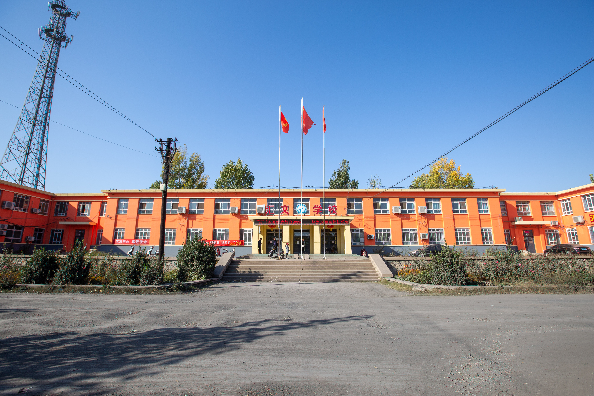
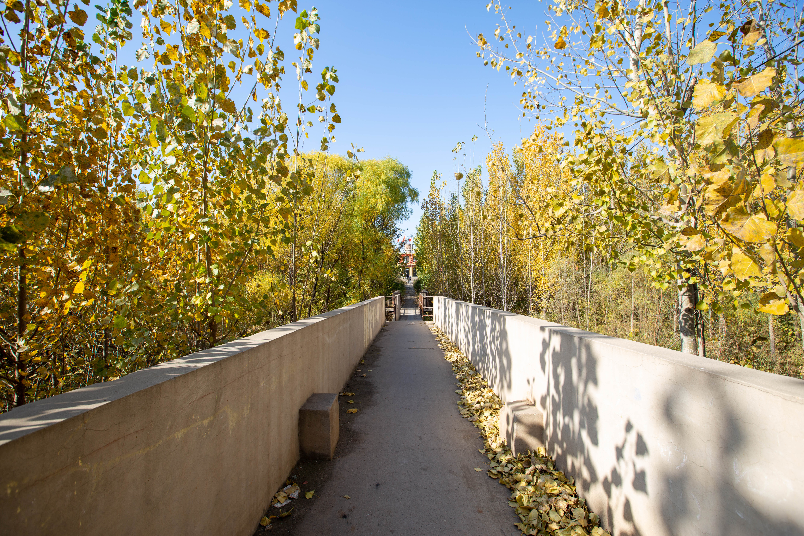
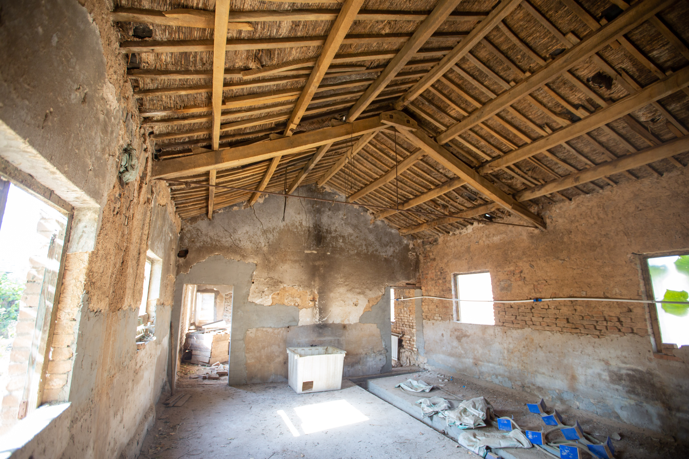
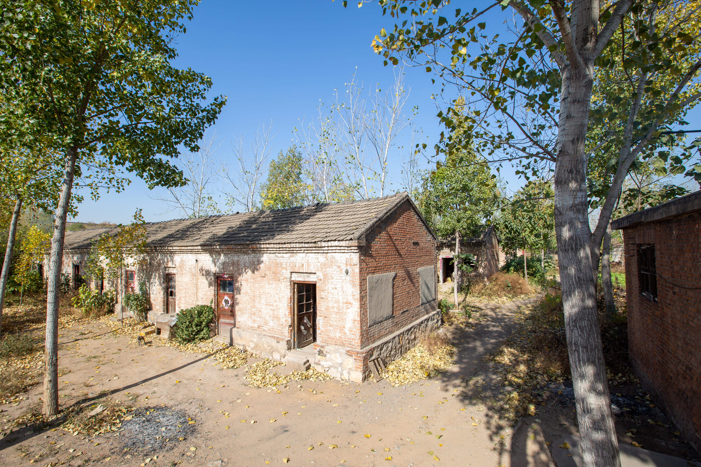

岳城时期校园1
文革开始后不久，受国内外形势影响，中央决定将北京十三所重点高校外迁，北京水利水电学院为13所“京校外迁”高校之一，1969年迁往河北省磁县岳城水库工地，先后在岳城水库和邯郸市办学。

岳城时期校园2
1969年，奉命迁往河北省磁县岳城水库和河南省林县。十三所京校外迁高校之一。
 岳城时期校园3
岳城时期校园3
1970年3月20日，水利电力部军管会致河北省革委会将北京水利水电学院交由河北省领导。

岳城时期校园4
1970年12月23日，北京水利水电学院改名为河北水利水电学院。

岳城时期校园5
1971年1月1日起，启用河北水利水电学院新校名。